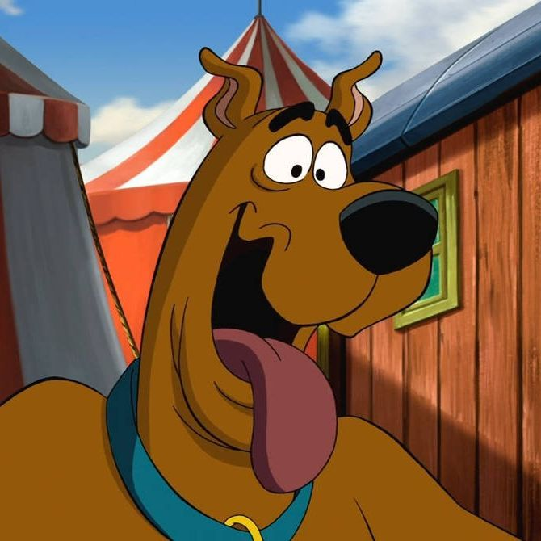
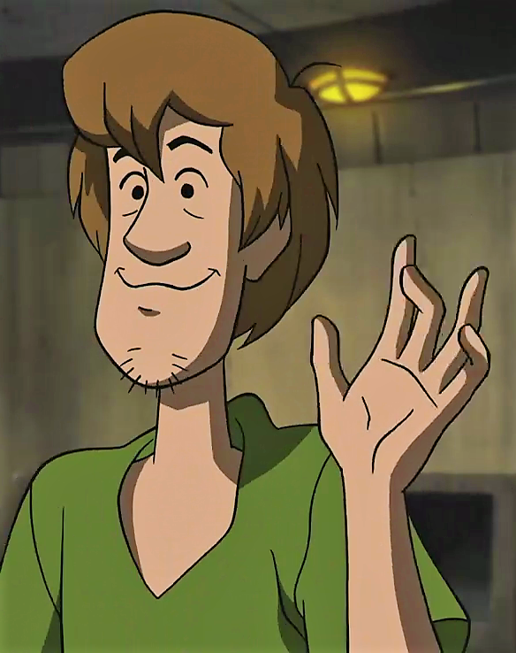
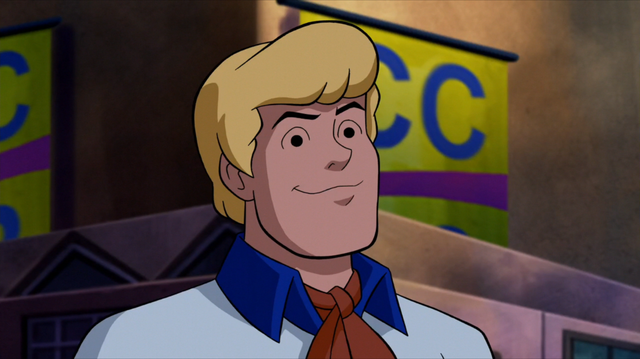
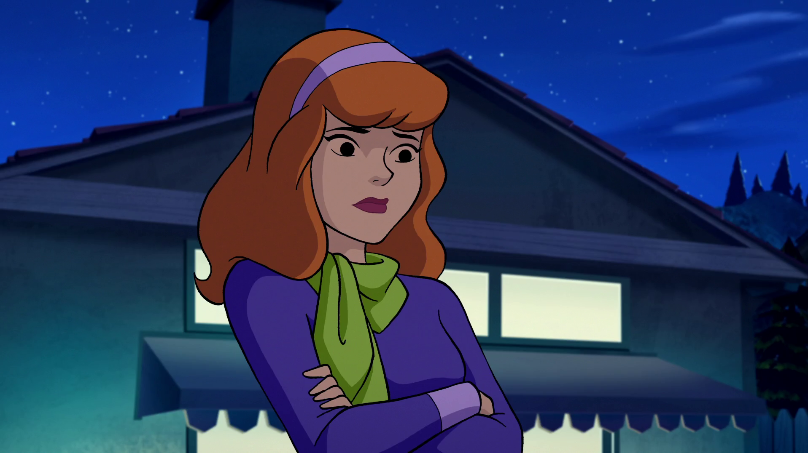
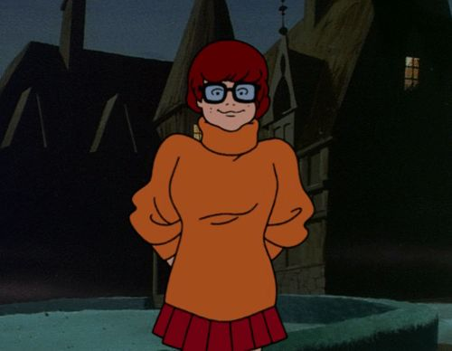

Персонажи комиксов Скуби-Ду
Ниже представлены основные персонажи с изображениями и описаниями:
Навигация по персонажам
Скуби-Ду
Скуби-Ду — главный герой серии, говорящий дог с огромным аппетитом. Он ленивый, трусливый, но при этом очень любопытный, что часто втягивает его и команду в приключения. Его фобии перед призраками и монстрами создают комические ситуации.
Несмотря на трусость, Скуби-Ду всегда помогает друзьям раскрыть тайну преступления. Его любовь к еде часто становится ключом к решению загадки, ведь он находит спрятанные улики, отвлекая злодеев.
Верный друг Шэгги, главный герой комиксов. Любит лакомства и помогает раскрывать тайны.
Шэгги Роджерс
Нервный и ленивый подросток, лучший друг Скуби-Ду. Шэгги разделяет страх перед опасностями с Скуби и часто прячется в самых неожиданных местах. Он известен своим обжорством и непреодолимой тягой к сендвичам и еде.
Шэгги, как и Скуби, часто непреднамеренно помогает раскрыть преступления. Его забавные реакции и комичные идеи делают его одним из любимых персонажей среди фанатов. Его дружба с Скуби Ду — основа всей команды.
Фред Джонс
Фред — лидер команды Мистери-Инк. Он смелый, решительный и всегда готов взять на себя ответственность за план действий. Любит разрабатывать ловушки для злодеев и организовывать расследования.
Его стратегическое мышление помогает команде выходить из сложных ситуаций. Фред всегда спокоен, рассудителен и вдохновляет других членов команды на действия. Он олицетворяет лидерство и организованность.
Дафна Блейк
Дафна — стильная, смелая и находчивая. Часто оказывается в опасных ситуациях, что приводит к забавным сценам, но она всегда находит выход. Её интерес к моде и красоте делает её уникальным персонажем среди группы.
Помимо внешности, Дафна — активный член команды. Она решительная, умеет использовать ловкость и смекалку, чтобы помогать друзьям. Её персонаж сочетает в себе харизму и умение действовать в сложных условиях.
Велма Динкли
Велма — умная и логически мыслящая участница команды. Она эксперт по разгадке тайн и анализу улик. Велма часто становится главным источником идей для раскрытия преступлений.
Её проницательность и аккуратность позволяют команде находить решения там, где другие видят только хаос. Велма — мозг операции и пример для других персонажей, как ум и внимание к деталям помогают достигать целей.